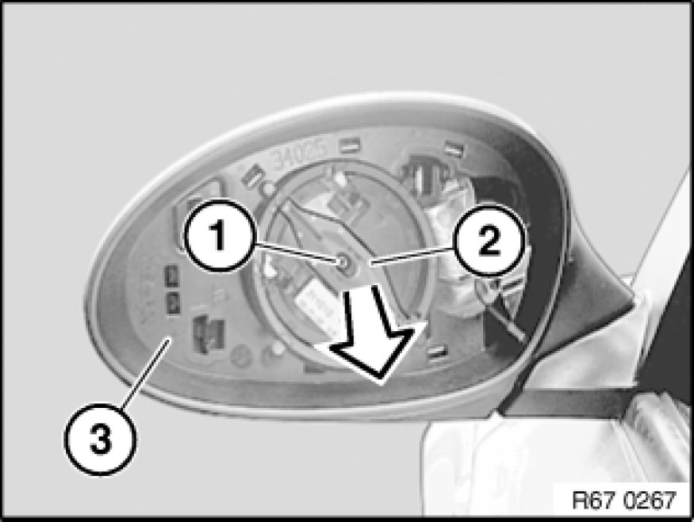
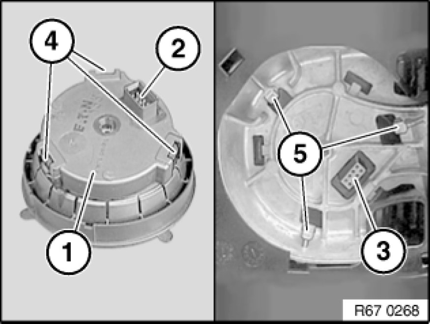

Power Mirror Motor: Service and Repair
67 13 001 - Replacing drive unit for electrically operated left or right door mirror

Necessary preliminary tasks:
- Remove mirror glass [1][2]51 16 026 Replacing Mirror Glass for mirror

Release screw (1).
Remove drive for electrically operated door mirror (2) in direction of arrow from mirror housing (3).

Installation:
Fit drive for electrically operated door mirror (1) so that pin housing (2) engages exactly in plug housing (3) and locators (4) slide into guides (5).